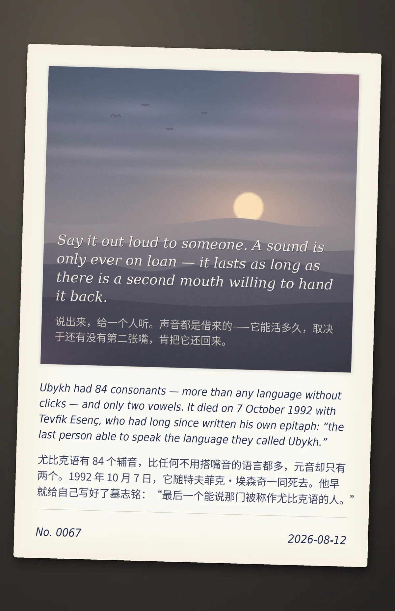

Say it out loud to someone. A sound is only ever on loan — it lasts as long as there is a second mouth willing to hand it back.（说出来，给一个人听。声音都是借来的——它能活多久，取决于还有没有第二张嘴，肯把它还回来。）
Ubykh had 84 consonants — more than any language without clicks — and only two vowels. It died on 7 October 1992 with Tevfik Esenç, who had long since written his own epitaph: "the last person able to speak the language they called Ubykh."（尤比克语有 84 个辅音，比任何不用搭嘴音的语言都多，元音却只有两个。1992 年 10 月 7 日，它随特夫菲克·埃森奇一同死去。他早就给自己写好了墓志铭："最后一个能说那门被称作尤比克语的人。"）